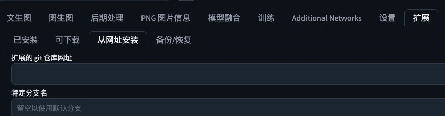
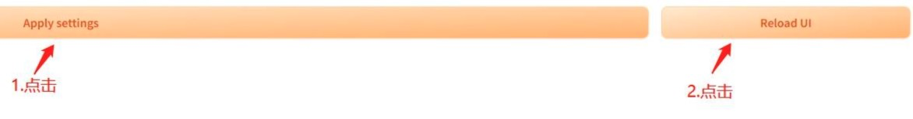

stable-diffusion 使用
# 环境配置
# 环境要求
系统：centos7.8
python：3.10.12
cuda：11.7
# 前提条件
- gpu环境准备好
- git 、python、aria2c、pyenv等安装好，pip改为清华源python相关参考 (opens new window)
- 可以科学上网
# clone代码
虽然可以使用webui.sh下载项目，但是国内网络问题很难下载，如果可以科学上网，自己手动下载会更方便些。可以通过git config --global http.proxy 代理地址配置代理
webui代码
git clone https://github.com/AUTOMATIC1111/stable-diffusion-webui.git
webui 仅仅是一个外层界面包装，核心功能是通过其他仓库（或以仓库的形式、或以安装包的形式）支撑的。其他仓库需放在 ./repositories 文件夹下：
mkdir repositories
然后依次下载以下仓库，并切换到合适的版本以避免可能的版本适配问题：
stablediffusion
git clone https://github.com/Stability-AI/stablediffusion.git ./repositories/stable-diffusion-stability-ai
git -C ./repositories/stable-diffusion-stability-ai checkout cf1d67a6fd5ea1aa600c4df58e5b47da45f6bdbf
2
taming-transformers
git clone https://github.com/CompVis/taming-transformers.git ./repositories/taming-transformers
git -C ./repositories/taming-transformers checkout 24268930bf1dce879235a7fddd0b2355b84d7ea6
2
k-diffusion
git clone https://github.com/crowsonkb/k-diffusion.git ./repositories/k-diffusion
git -C ./repositories/k-diffusion checkout c9fe758757e022f05ca5a53fa8fac28889e4f1cf
2
CodeFormer
git clone https://github.com/sczhou/CodeFormer.git ./repositories/CodeFormer
git -C ./repositories/CodeFormer checkout c5b4593074ba6214284d6acd5f1719b6c5d739af
2
BLIP
git clone https://github.com/salesforce/BLIP.git ./repositories/BLIP
git -C ./repositories/BLIP checkout 48211a1594f1321b00f14c9f7a5b4813144b2fb9
2
generative-models
git clone https://github.com/Stability-AI/generative-models.git
2
# 安装依赖
- 安装pytorch 参考 (opens new window)
# 使用阿里云源安装tb-nightly，清华源没有这个
python -m pip install tb-nightly sgm -i https://mirrors.aliyun.com/pypi/simple/
# 使用清华源安装其他必备包,必须安装否则下面会失败。
python -m pip install scipy opencv-python tqdm pyyaml xformers
# 安装项目必备包
python -m pip install -r requirements.txt
# 其他依赖
pip install ftfy regex tqdm -i https://pypi.tuna.tsinghua.edu.cn/simple
pip install git+https://github.com/openai/CLIP.git
pip install open_clip_torch xformers -i https://pypi.tuna.tsinghua.edu.cn/simple
pip install -r repositories/CodeFormer/requirements.txt -i https://pypi.tuna.tsinghua.edu.cn/simple
2
3
4
5
6
7
8
9
10
11
12
13
14
15
# 下载基础模型
cd stable-diffusion-webui/models/Stable-diffusion/
使用aria2c下载v2.1 (opens new window)下载基础模型（Stable Diffusion v2.1，safetensors 格式，5.21 GB），放在 ./models/Stable-diffusion/ 下。当然也可以下载 v1.5 (opens new window) 或其他基础模型，其他模型请在c站 (opens new window)或国内的L站 (opens new window)下载。
# 启动项目
python webui.py --disable-nan-check --precision full --no-half --listen
此时可能报错:无法加载clip-vit-large-patch14 ,这是因为国内没法从huggingface下载，和上面环境配置中一样，需要手动下载下来 clip-vit-large-patch14下载地址 (opens new window)，在项目目录下新建openai ，将clip-vit-large-patch14 放到此目录下。如果启动还是报错，可以尝试指定代码读取的绝对路径 参考CLIPTokenizer.from_pretrained本地加载 (opens new window) Stablediffusion本地加载 (opens new window)
# 插件
所有插件有两种方式安装：
进入插件目录，通过
git clone下载，以下插件都是这种方式webui安装,如图，需要科学上网。

# 中文插件
- 下载插件
cd stable-diffusion-webui/extensions
# 不按照可能会有报错
git clone https://github.com/DominikDoom/a1111-sd-webui-tagcomplete.git
git clone https://github.com/Extraltodeus/multi-subject-render.git
# 中文插件
git clone https://github.com/hanamizuki-ai/stable-diffusion-webui-localization-zh_Hans
2
3
4
5
6
7
8
重启sd
选择Settings→User interface，下拉找到Localization栏，选择zh_CN（推荐安装zh_Hans Localization）
提示词翻译插件，可输入中文，自动翻译为英文。(提示词最好是英文)
cd stable-diffusion-webui/extensions git clone https://github.com/studyzy/sd-prompt-translator # 重新启动sd后，默认需要下载2g左右的翻译模型，需要科学上网。模型存放位置是插件目录下的script，也可以自己在下载https://huggingface.co/Helsinki-NLP/opus-mt-zh-en,放到sd-prompt-translator/scripts/models/models--Helsinki-NLP--opus-mt-zh-en下1
2
3
# ControlNet
ControlNet 允许用户对生成的图像进行精细的控制，以获得更好的视觉效果，ControlNet 让 AI 绘画的可控性有了质的突变，让 AGIC 真正的可以投入生产使用。
打开 stable-diffusion-webui，点击【Extensions】- 【Install from URL】输入https://ghproxy.com/https://github.com/Mikubill/sd-webui-controlnet.git (opens new window) 或进入插件目录git clone
下载模型实现，点击下载 放到stable-diffusion-webui/extensions/sd-webui-controlnet/models 目录
重启 stable-diffusion-webui
# 问题解决
- basicsr安装失败，依赖tb-nightly，但清华源没有这个包，所以有了下面的报错。sgm也需要用阿里源
ERROR: Cannot install -r requirements.txt (line 5) because these package versions have conflicting dependencies.
The conflict is caused by:
basicsr 1.4.2 depends on tb-nightly
basicsr 1.4.1 depends on tb-nightly
basicsr 1.4.0 depends on tb-nightly
basicsr 1.3.5 depends on tb-nightly
basicsr 1.3.4.9 depends on tb-nightly
basicsr 1.3.4.8 depends on tb-nightly
basicsr 1.3.4.7 depends on tb-nightly
basicsr 1.3.4.6 depends on tb-nightly
basicsr 1.3.4.4 depends on tb-nightly
basicsr 1.3.4.3 depends on tb-nightly
basicsr 1.3.4.2 depends on tb-nightly
basicsr 1.3.4.1 depends on tb-nightly
basicsr 1.3.4.0 depends on tb-nightly
basicsr 1.3.3.11 depends on tb-nightly
basicsr 1.3.3.10 depends on tb-nightly
basicsr 1.3.3.9 depends on tb-nightly
basicsr 1.3.3.8 depends on tb-nightly
basicsr 1.3.3.7 depends on tb-nightly
basicsr 1.3.3.6 depends on tb-nightly
basicsr 1.3.3.5 depends on tb-nightly
basicsr 1.3.3.4 depends on tb-nightly
basicsr 1.3.3.3 depends on tb-nightly
basicsr 1.3.3.1 depends on tb-nightly
basicsr 1.3.3 depends on tb-nightly
basicsr 1.3.2 depends on tb-nightly
basicsr 1.3.1 depends on tb-nightly
To fix this you could try to:
1. loosen the range of package versions you've specified
2. remove package versions to allow pip attempt to solve the dependency conflict
2
3
4
5
6
7
8
9
10
11
12
13
14
15
16
17
18
19
20
21
22
23
24
25
26
27
28
29
30
31
32
33
- A tensor with all NaNs was produced in Unet
File "/data/rd/aigc/stable-diffusion/stable-diffusion-webui/modules/devices.py", line 136, in test_for_nans
raise NansException(message)
modules.devices.NansException: A tensor with all NaNs was produced in Unet. This could be either because there's not enough precision to represent the picture, or because your video card does not support half type. Try setting the "Upcast cross attention layer to float32" option in Settings > Stable Diffusion or using the --no-half commandline argument to fix this. Use --disable-nan-check commandline argument to disable this check.
2
3
启动是添加参数 --disable-auto-autolaunch --listen --precision full --no-half --disable-nan-check 参考issue (opens new window) issue2 (opens new window)
# 参考
- [1] Stable Diffusionwebui部署(Linux) (opens new window)
- [2] Linux上如何使用Stable Diffusion WebUI (opens new window)
- [3] stable diffusion使用及插件 (opens new window)
- [4] 中文插件配置 (opens new window)
- [5] 中文prompt翻译 (opens new window)
- [6] 图像精调-ControlNet插件使用 (opens new window)
- [7] stable diffusion 原理 (opens new window)
- [8] 如何写出好的提示词(stable diffusion) (opens new window)